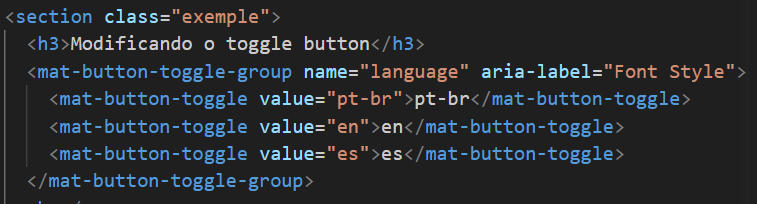
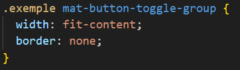
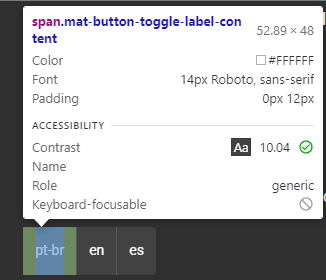
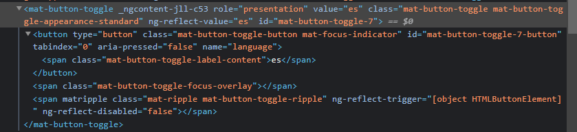
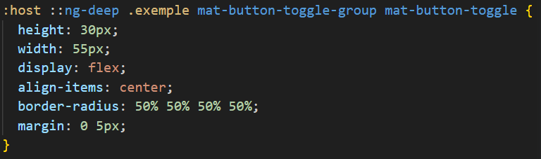
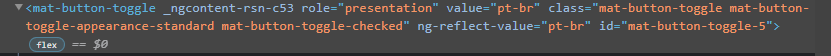
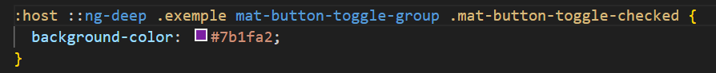

Primeiro passo é limitar o tamanho e remover as bordas, isso é feito direto no componente, então vamos criar a classe exemple e modificar apenas o componente de exemplo
 Segundo passo é localizar o elemento que contém o botões.
Para isso, abra a ferramenta do desenvolvedor (DevTools / Inspecionar) e selecione a parte do componente que deseja acessar.
 Agora que sabemos qual elemento devemos modificar, vamos fazer a modificação no nosso código.
Para isso, vamos utilizar a classe (exemple) para continuar nossas modificações.
Usaremos o seletor ':host ::ng-deep' + o nome da classe que criamos + o elemento que queremos modificar para aplicar o estilo.
Repedindo o mesmo processo podemos descobrir qual classe é aplicada quando um botão está selecionado e sobrescrever a cor.
 